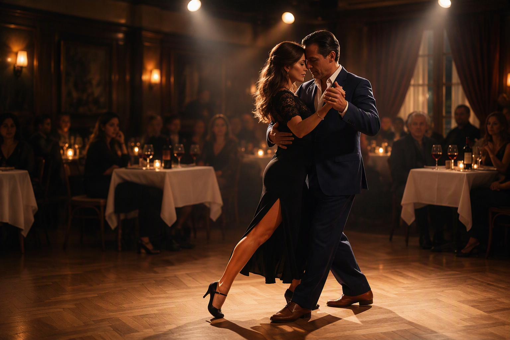
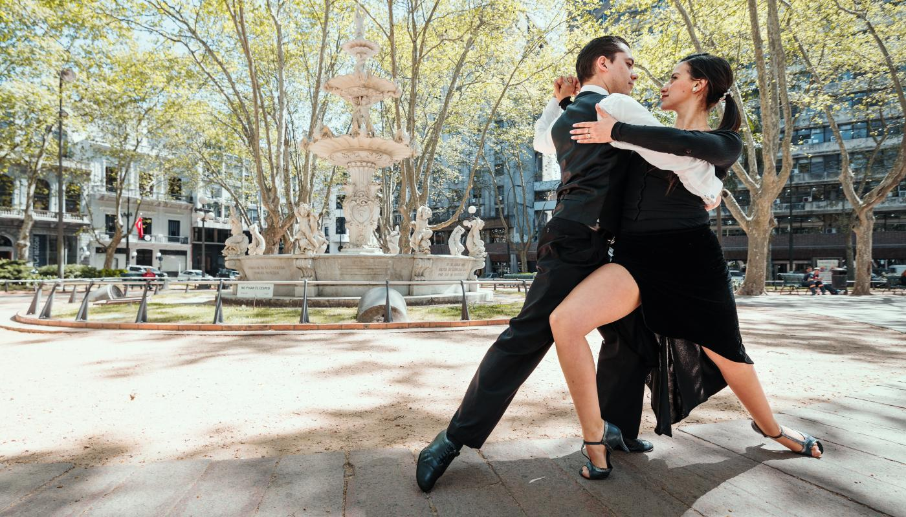

Voyage Tango et Bodegas à Buenos Aires
Immergez-vous dans l’ambiance des milongas de Buenos Aires tout en découvrant les meilleures caves et l’art de vivre argentin en petit groupe.
Aucune date fixée — soyez à l’initiative !
Tango argentin & immersion culturelle
Vivez le Tango à sa source.
Participez à nos séjours thématiques en petit groupe (2 à 5 personnes), entre milongas, rencontres et accompagnement sur mesure.
Voir les séjours Tango →
À chaque envie, son tango
Ouvrez une destination pour découvrir les séjours et exprimer votre intérêt.

Immergez-vous dans l’ambiance des milongas de Buenos Aires tout en découvrant les meilleures caves et l’art de vivre argentin en petit groupe.
Aucune date fixée — soyez à l’initiative !

Découvrez l’histoire partagée du tango entre Montevideo et Buenos Aires lors d’une immersion au bord du Río de la Plata.
Aucune date fixée — soyez à l’initiative !


Un voyage musical unique reliant les racines de la Habanera, du Son cubain et de la Salsa au Tango argentin à La Havane.
Aucune date fixée — soyez à l’initiative !


Plongez dans l’héritage vivant de Carlos Gardel lors du Festival International de Tango de Medellín en Colombie.
Aucune date fixée — soyez à l’initiative !


En complément de nos circuits classiques, nous développons des expériences immersives et affinitaires en très petit groupe (2 à 5 personnes). Découvrez nos concepts en préparation.
Une immersion au cœur des rythmes cubains. À La Havane et Trinidad, apprenez la Salsa et laissez-vous porter par le Son Cubain. Découvrez aussi comment le Tango argentin puise ses racines dans la Habanera cubaine, ce rythme qui a voyagé des ports de Cuba à ceux de Buenos Aires. Des séjours rythmés par la musique, avec des cours et des soirées dans des lieux authentiques.
Pour ceux qui veulent prendre le temps. Un séjour de 3 semaines ou plus entre l’Uruguay et l’Argentine, au rythme des milongas, des cafés historiques et de la vie locale. Parfait pour les digital nomads, les retraités ou les amoureux de tango qui souhaitent s’immerger profondément.
Une pause tango de 4 jours pour les voyageurs pressés. Au choix : Valence, Valladolid, Saragosse ou Barcelone. Ateliers intensifs, milongas locales et exploration culturelle.
Un itinéraire culturel reliant les lieux mythiques du tango, de l’immigration européenne au Río de la Plata aux figures poétiques du lunfardo. Visites de cantines historiques et rencontres avec des luthiers.
Une immersion bienveillante pensée pour les voyageuses solos à Buenos Aires. Accompagnement personnalisé, apprentissage des codes de la milonga, ateliers de confiance en soi et découverte des quartiers historiques entre femmes.
Un séjour entre hommes solos conjuguant culture populaire, cafés historiques, asados d’exception et technique du guidage (leader). Une ambiance conviviale, sans pression de performance, combinant tango et art de vivre argentin.
Un parcours axé sur la conscience corporelle, l’équilibre et le lâcher-prise. Conçu avec des intervenants qualifiés, ce voyage s’adresse aux danseurs ou débutants souhaitant travailler l’écoute et la connexion à l’autre par l’abrazo.
Loin des circuits touristiques industriels, plongez au cœur du Buenos Aires nocturne et authentique. Poussez les portes de milongas de quartier confidentielles et vibrez au son des orchestres typiques en direct.
Un de ces univers correspond à votre projet de voyage ?
Exemple concret
Tango & Bodegas Buenos Aires — formule Sérénité
4 500 € par personnesoit 22 500 € pour un groupe de 5 voyageurs
Milongas de Buenos Aires, bodegas, rencontres et découvertes : un séjour privatif de 17 nuits en Argentine, avec un guide bilingue dédié. Aller-retour depuis la France.
Contrairement à un circuit classique, où le guide n’intervient que sur certaines étapes, ici un guide bilingue dédié accompagne le groupe du départ en France jusqu’au retour, jour et nuit.
Découvrir le séjour Tango & Bodegas →Exemple de séjour sur mesure réalisé pour 5 personnes. Le tarif final dépend des dates, des vols, du niveau d’hébergement et des activités retenues.
Une question sur un séjour ou une envie de voyage à préciser ?
Parlons de votre projet → · +33 6 10 95 09 84